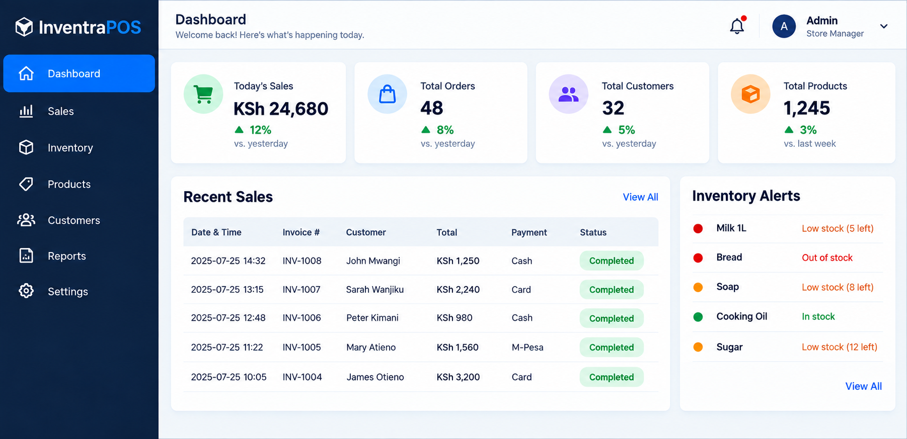

Software Engineering
Building business applications, desktop systems, APIs, and cloud-connected software with maintainability and usability in mind.
SOFTWARE ENGINEERING • DATA ANALYTICS • DATA SCIENCE • APPLIED AI
I am Designing software and data-driven solutions that automate workflows, uncover insights, and solve practical business problems.
What I Do
My work combines software development, analytics, machine learning, and practical systems design.
Building business applications, desktop systems, APIs, and cloud-connected software with maintainability and usability in mind.
Turning raw data into meaningful insights through statistical analysis, dashboards, visualization, predictive modeling, and machine learning.
Designing technology around real operational challenges and transforming workflows into practical digital solutions.
Featured Work
Practical software and data-driven solutions designed around real operational needs.

Software Engineering • Business Systems
Point-of-Sale & Inventory Management System
A desktop business application supporting sales, inventory management, customer records, reporting, and cloud-connected synchronization.
Technologies
Offline-first architecture
Two-way cloud synchronization
Inventory & sales management
Desktop business application
Selected Work
A selection of applied projects focused on solving practical problems through software development, analytics, and intelligent systems.
Software Engineering
01A reporting platform designed to transform structured care documentation into monthly summaries, trends, and actionable operational insights.
View ProjectData Analytics
02Data analysis and predictive modeling focused on inventory patterns, demand behavior, and better operational decision-making.
View ProjectMachine Learning
03A machine-learning project exploring handwritten digit recognition, model training, performance evaluation, and classification accuracy.
View ProjectResearch
My research interests connect data science, analytics, artificial intelligence, software systems, and practical problem-solving.
I am particularly interested in how analytical and intelligent systems can support better decisions, automate repetitive processes, and improve real-world operational workflows.
About
I combine a Computer Science foundation with graduate-level Data Science and Analytics work to build software, analytical systems, and intelligent solutions.
My experience includes full-stack development, desktop applications, business systems, cloud-connected software, data analysis, visualization, machine learning, and predictive modeling.
I am especially interested in applying technology to real operational challenges and turning complex workflows into clear, usable systems.
Let's Connect
I am open to conversations around software engineering, data analytics, data science, AI, and applied technology.